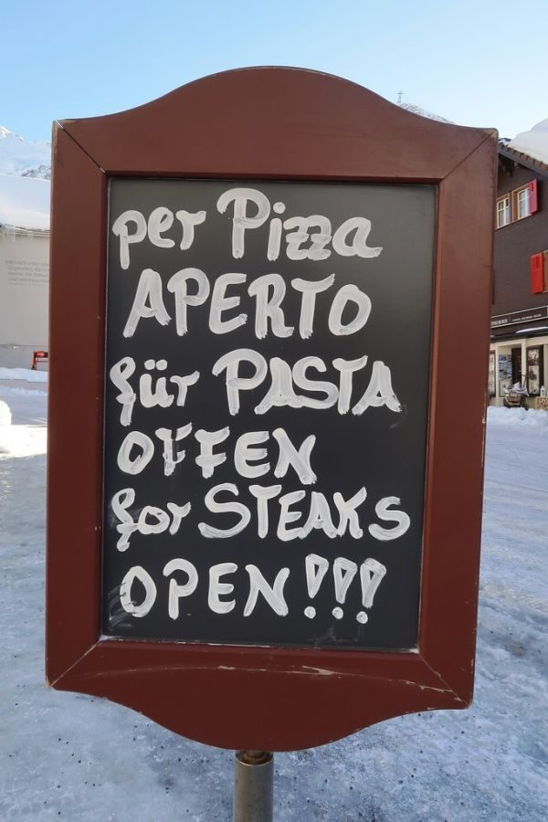

Swiss Steak
Poppa kept 2 versions of this dish.
Follow any recipe, mix and match, or use for inspiration for your own version. That's how Poppa did it.
Swiss Steak

Photo: TomHiggins (CC BY-SA 2.0)
A slow-cooker beef dish of flour-coated round steak, browned and then cooked low and slow over potatoes, carrots, and onions in tomato sauce and chopped tomatoes.
Directions
- Heat oil in skillet. Coat steak with flour and brown in hot oil. Remove from skillet and drain. Place potatoes, carrots and onion in bottom of stoneware. Place steak on top of vegetables. Sprinkle with salt and pepper. Pour tomatoes and tomato sauce over meat. Cover and cook on low 10 to 12 hours. (High 5 to 6 hours)
- Heat the oil in a skillet.
- Coat the steak with flour and brown it in the hot oil.
- Remove the steak from the skillet and drain.
- Place the potatoes, carrots, and onion in the bottom of the stoneware (slow cooker).
- Set the steak on top of the vegetables.
- Sprinkle with the salt and pepper.
- Pour the tomatoes and tomato sauce over the meat.
- Cover and cook on low 10 to 12 hours (or on high 5 to 6 hours).
Goes well with
Swiss Steak I

Photo: Kecko (CC BY 2.0)
Round steak pounded with seasoned flour, browned with onion in butter, then simmered in tomato soup with a little vinegar until tender.
Directions
- Combine flour,salt and pepper. Pound flour into steak. Brown steak and onion slices in butter. Then add tomato soup, water and vinegar, cover and simmer until tender.
- Combine the flour, salt, and pepper.
- Pound the flour mixture into the steak.
- Brown the steak and onion slices in the butter.
- Add the tomato soup, water, and vinegar.
- Cover and simmer until tender.
Goes well with
https://baron-3dl.github.io/normans-kitchen/recipe/swiss-steak.html